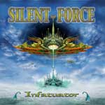

|
|
||
Silent Force : Infatuator (2001) |
|

http://silentforce.de |
1. Infatuator 4:46 |
9/10 |
|
Infatuator es el segundo disco del grupo alemán Silent Force. Liderados por D.C. Cooper, ex-cantante de Royal Hunt, y el fantástico guitarrista Alexander Beyrodt, Silent Force hacen power metal melódico, aunque con diversas influencias que van desde los Judas Priest hasta el neoclasicismo, pasando por el metal progresivo. Infatuator es un trabajo sobresaliente en todos los aspectos: la voz de D.C. Cooper es cristalina, potente, y capaz de alcanzar tonos muy altos; la guitarra de Beyrodt está por todas partes, aportando ritmos contundentes, riffs neoclásicos y algunos solos estratosféricos; por otra parte, el resto de la banda no desmerece y tanto los teclados (Torsten Röhre) como el bajo (Jürgen Steinmetz) y la batería (Andre Hilgers) hacen también un trabajo fabuloso. "Infatuator" es una canción rápida y potente, donde D.C. Cooper demuestra que es capaz de cantar con una voz extrema al más puro estilo Rob Halford y donde Alexander Beyrodt demuestra lo rápido que se puede tocar una guitarra. En "Fall Into Oblivion", descubrimos la pureza y claridad de la voz de D.C. Cooper, además de un ritmo rápido, aunque con cambios, un estribillo melódico, coros y algunos riffs y solos cortantes y absolutamente vertiginosos. La tercera canción, "Hear me Calling", es de ritmo más moderado. Lo más destacable es el estribillo y el solo de guitarra, no especialmente rápido, pero si cargado de emoción. "Promised Land" recupera el ritmo rápido, gracias sobre todo a los veloces riffs de guitarra. Más coros, otro estribillo pegadizo, marcados cambios de ritmo, y un nuevo e impresionante solo de guitarra. En "We Must Use The Power" encontramos un cierto aire a metal clásico aderezado con riffs neoclásicos, donde los cambios de ritmo marcan notablemente la canción y donde podemos apreciar, como no, otro increíble solo con elementos neoclásicos. El sexto corte, "All Guns Blazing" es un cover de la canción de Judas Priest, donde de nuevo D.C. Cooper canta a lo Halford. "Cena Libera" es una pequeña instrumental tocada por la orquesta de la televisión y radio del estado Bielorruso, que da paso a "Gladiator", de tempo rápido, ritmo marcado, excelente trabajo a varias voces, y estribillo melodioso y potente. "The Blade" posee un ritmo vertiginoso, un tono más progresivo con más presencia de los teclados, varias voces y coros muy bien conjuntados, y un solo neoclásico de otra galaxia. La décima, "Last Time", es una canción de tempo moderado, aunque con algunos cambios de ritmo y de estilo para mantener el interés. "World Aflame" es otra de las que tienen un cierto sabor clásico, sobre todo en el estribillo, y ritmo tranquilo, y que tiene su mejor momento en el potente solo de guitarra neoclásico. "In Your Arms" es una balada, acompañada sobre todo del teclado, y donde aparece una angelical voz femenina (Inka Auhagen) dando la réplica al señor Cooper. Cierra el disco "Northern Lights" una pequeña cancioncita instrumental protagonizada por lo que yo diría que es una guitarra clásica.
|
||
Rubén Béjar |
||